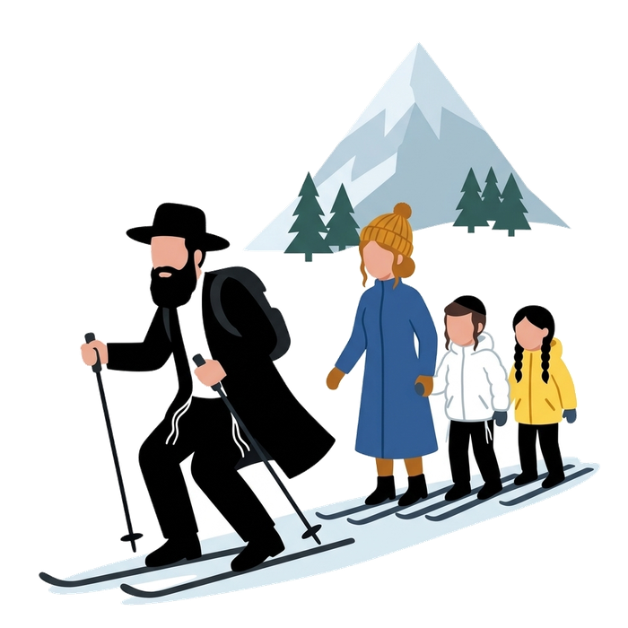

Home / The French Alps, strictly kosher / Megève, strictly kosher
Megève, strictly kosher
445 km of linked pistes, one request for the kosher side
Megève sits at about 1,050 m in Haute-Savoie and opens onto the Évasion Mont-Blanc ski area, 445 km of pistes across seven linked resorts. Mishpacha Tours organises the kosher side of your week here: a private chef in your chalet, hot meals delivered to your apartment, Shabbat before candle lighting, the holidays, and a minyan with a Sefer Torah for your dates. One request, one written quote. Stays, transfers and meals are organised and invoiced by our kosher team based in the Alps; Mishpacha Tours sells its guided tours in Lyon.
- About 1,050 m, Évasion Mont-Blanc, 445 km of pistes
- About 2 h 10 from Lyon, about 1 h 15 from Geneva
- Chef, meals, Shabbat, minyan
- Checked 8 October 2026

What we organise in Megève
- A chalet or apartment with a private chef. The team makes the kitchen kosher, the chef cooks on site, every meal of the week is covered. You ski, you come back to a set table.
- Meals delivered in the resort. Hot meals brought to your chalet, apartment or hotel for the week. Families, friends or a group: send the number of people and the dates.
- Shabbat before candle lighting. Shabbat meals, challot and wine are delivered on Friday and set before candle lighting. Nothing is delivered on Shabbat or on a holiday.
- The holidays. Hanukkah candles, a Megillah reading and a Purim meal, Pesach on request. Tell us which holiday falls in your week.
- A minyan and a Sefer Torah. A Chabad service is published for Megève in winter (see below). Outside it, the minyan depends on how many families are in the resort that week: give us your dates and we group them.
- A tailor-made stay, A to Z. Chalet, chef or delivered meals, transfers, Shabbat, the holidays, a minyan: one request, one quote. Families and groups from abroad are our core; for a very small group asking for one delivery only, say so and we tell you what is feasible.
Strictly kosher. Our kosher team based in the Alps cooks under the Chabad network of the Alps; ask for the supervision details in writing with your quote. Detail of each service: kosher services in the French Alps.
Kosher in Megève: what is published
Supervision is rarely published, so ask before you book. Here is what directories and the press show, checked 8 October 2026.
- Kosher Ski Club, Chalet Princesse. Listed on TripAdvisor as a lodge in Megève, rated 3.7 out of 5 from 11 reviews. One reviewer places it about 8 km from the village and says a taxi is needed. We have not verified that it operates this season, nor who supervises it.
- A programme run by Kosher Winter Sports. The Kosher Travel Deals blog says it runs catered chalet programmes in Courchevel and Megève, usually in the winter school holidays, with children's programmes and Shabbat activities. One blog post is the only source we found. We have not verified it.
- Private chefs. Local agencies advertise "glatt kosher" chefs at home in Megève. The supervision is not stated. Treat them as chefs, not as kosher hotels.
- Kosher shop or restaurant. Not published. Bring your food from Lyon, or let us deliver meals to you.
Sources: TripAdvisor, koshertraveldeals.com, skikosher.com.
Minyan and Shabbat in Megève
A Chabad service in Megève in winter is published on synalpes.wordpress.com, in a page dated 2014. Two venues appear in the sources: 136 route Edmond de Rothschild, 74120 Megève, or a room called "Maison de la Montagne". Published in 2014, confirm the address for your dates. No phone number is published on this page.
Shabbat times change every week. Check them for your dates on Hebcal. If you want a minyan for a given week, tell us your dates early: we build it with the Chabad network of the Alps and bring a Sefer Torah.
How it works
- 1
Tell us
Megève, your dates, the number of people, and what you need: a chef, delivered meals, Shabbat, a holiday, a minyan. By WhatsApp or with the form at the bottom of this page.
- 2
We put it together
The same day, we check with our team in the Alps what is possible for your dates in Megève: chef, kitchen, deliveries, minyan. One contact from start to finish.
- 3
You get one quote
The price depends on the dates, the number of people and the menu. You receive a written quote before you commit to anything.
Getting to Megève
- From Geneva airport: about 1 h 15 by road. Transfer companies give 1 h 05 to 1 h 30 depending on traffic and weather (alps2alps.com, ultimate-summit.fr and others, checked 8 October 2026).
- From Lyon-Saint-Exupéry airport: about 2 h 10 without traffic, according to the ski directory j2ski.com. Megève Tourisme gives about 2 h 15. On a Saturday in February, or in snow, add an hour or more.
- Opening dates, winter 2026-2027: ski area open from 19 December 2026 to 4 April 2027, with partial openings from 5 and 12 December (forfait.megeve.com, checked 8 October 2026; snow conditions can change them).
If you land in Lyon, shop kosher before you climb: Lyon, the gateway to the Alps. Or stop for three hours in the city: the Stopover.
Megève on the map
Pin on the tourist office, in the centre of the resort.
Kosher in Megève: questions
How much does it cost?
It depends on the dates, the number of people and the menu. You receive a written quote before you commit. We publish no price.
Can you deliver kosher meals to an apartment in Megève?
Yes, for a family or a group, for the week, with notice. Send your dates and the number of people.
Is there a minyan in Megève?
A Chabad service in winter is published for Megève, in a page dated 2014 (venue to confirm). Otherwise a minyan depends on how many families are there that week. Give us your dates and we group them, with a Sefer Torah.
Can you organise Hanukkah, Purim or Pesach in Megève?
Yes, on request. Hanukkah candles and a lighting, a Megillah reading and a Purim meal, Pesach meals. Ask early: these weeks fill up first.
Who supervises the food?
Our kosher team based in the Alps cooks under the Chabad network of the Alps. Ask for the supervision details in writing with your quote.
Keep reading
Sources: forfait.megeve.com (ski area and dates), megeve-tourisme.fr (address, access), j2ski.com and transfer companies (drive times), synalpes.wordpress.com (Chabad, 2014), TripAdvisor and koshertraveldeals.com (kosher listings), our team in the Alps for the services. Compiled by Mishpacha Tours from these sources. Checked 7 October 2026.